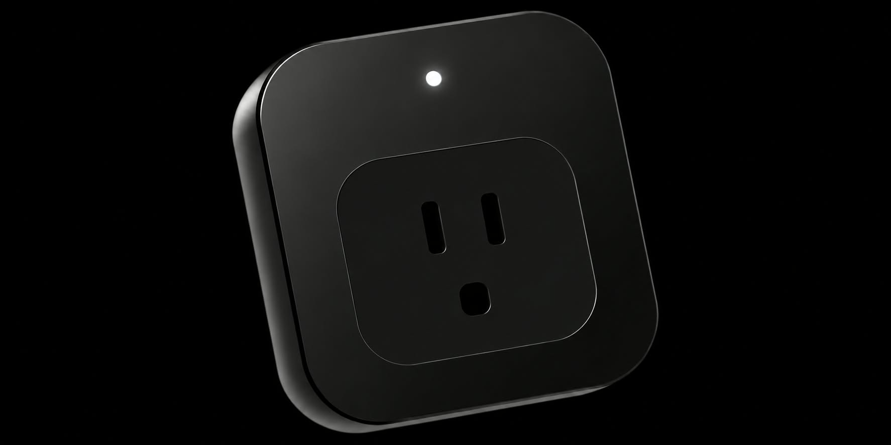
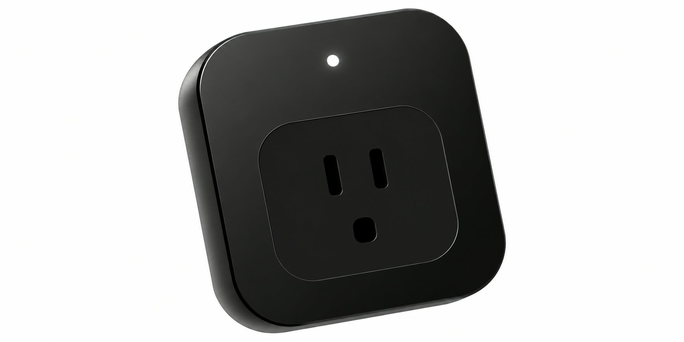

Sense
Onboard sensors read the connected appliance's voltage, current, and temperature.
Smart Electrical Safety & Control
Monitor the appliances you already have. Make them safer and smarter with one connected plug.


Smart protection, simply connected.
A smarter layer of safety for the appliances you already trust. MySmartPlug connects monitoring, control, and local protection in one calm, easy-to-understand device.
Know what your appliance is doing.
Automatic monitoring is active. Readings are updated live and saved to history every 3 minutes.
When the device is sleeping, use this control to request that it wake and return to MAINTENANCE mode.
Track the signals that matter in one glance. Voltage, current, and temperature readings help you understand appliance activity before an issue becomes a disruption.
Enable or disable each sensor in MAINTENANCE mode.
If the outlet disconnects because of an unsafe condition, it stays off until the condition clears and you turn it ON again here.
From sensing to notification.
Onboard sensors read the connected appliance's voltage, current, and temperature.
The microcontroller checks those readings against defined safety thresholds.
If a condition is unsafe, the appliance is automatically disconnected from the outlet.
A visual and audible warning is triggered, and the status updates on the web interface.
Review sensor measurements and confirmed system activities.
Last 36 hours
No sensor measurements recorded for this period.
Individual saved sensor measurements
| # | Date & Time | Voltage (V) | Current (A) | Temperature (°C) | Power (W) | Mode |
|---|---|---|---|---|---|---|
| No records loaded. | ||||||
Straightforward answers.
It continuously monitors voltage, current, and temperature, and automatically disconnects the appliance if any of these move outside a safe range — helping prevent overheating, overcurrent, and voltage-related damage.
Core safety logic runs locally on the device. Even without an active connection, My Smart Plug keeps monitoring and can still disconnect the appliance automatically when an unsafe condition is detected.
Yes. The device gives a visual and audible warning, and the same status is reflected on the web interface so you can see what triggered the disconnection.
Yes. The web interface lets you view live readings and control the connected outlet remotely, alongside the automatic protection running in the background.
No. It stays off until the unsafe condition clears and you choose to reconnect it through the web interface, so the appliance isn't exposed to the same risk again automatically.